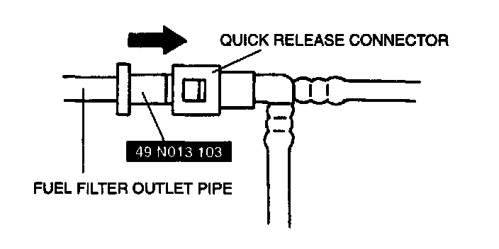
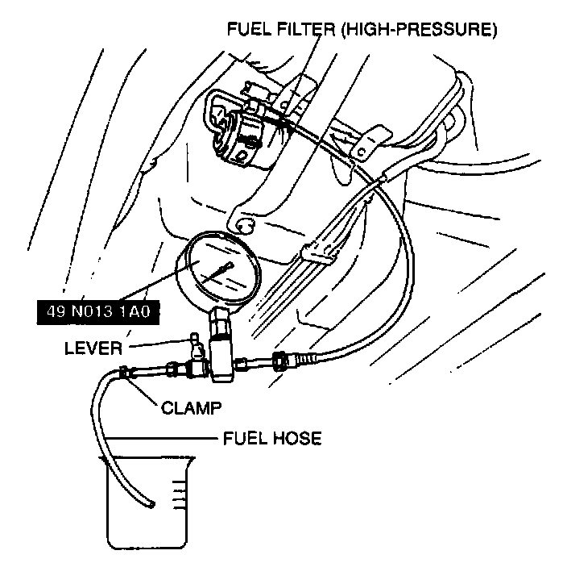
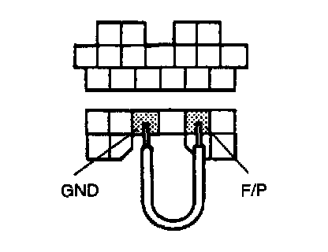

Fuel Pump Maximum Pressure Inspection
WARNING: Fuel line spills and leaks are dangerous. Fuel can ignite and cause serious injuries or death and damage. Always carry out the following procedure with the engine stopped.1. Complete the "BEFORE REPAIR PROCEDURE".
2. Disconnect the negative battery cable.
3. Lift up the vehicle with safety stands.
4. Remove the fuel filter cover.
5. Inspect that the quick release connector joint area is free of foreign materials. Clean as necessary.

6. Set the SST to the fuel filter outlet pipe and push into the quick release connector and disconnect the fuel pipe.
CAUTION:
- Removing the retainer from the disconnected fuel pipe will reduce the effectiveness of the retainer. The retainer must be replaced when any of the following applies.
1. Scratches or damage is observed on the retainer.
2. Fuel pipe has been replaced.
3. Fuel filter (high-pressure) has been replaced.
7. If removal of the retainer is required, remove it by squeezing the tabs of the retainer.
8. Cover the disconnected quick release connector to prevent them from being scratched or contaminated with foreign materials.
9. Turn the lever as shown to plug the SST outlet. Push the SST into the fuel filter outlet pipe until a click is heard.

10. Connect a fuel hose and clamp to the SST outlet pipe. Set the fuel hose into a container to avoid fuel spills.
11. Pull the quick release connector by hand and verity that it is installed securely.
12. Connect the negative battery cable.
CAUTION:
- Connecting the wrong data link connector terminals may possibly cause a malfunction. Carefully connect the specified terminals only.

13. Connect data link connector terminals F/P and GND by using a jumper wire.
14. Turn the ignition switch to ON to operate the fuel pump. Measure the fuel pump maximum pressure.
Fuel pump maximum pressure
Less than 640 kPa (6.5 kg/Sq.cm, 92 psi)
15. Turn the ignition switch oft and disconnect the jumper wire.
16. If not as specified, inspect following:
- Fuel pump
- Fuel pump relay
- Fuel filter for clogging
- Fuel line for clogging or leakage
17. Disconnect the SST. Inspect the fuel pipe for kinks. Replace the fuel pipe if necessary.
18. Inspect that the inside of the fuel filter outlet pipe and the quick release connector is free of foreign materials and damage. Clean as necessary, taking care not to damage the sealing surfaces.
19. Push the fuel pipe into the fuel filter outlet pipe until a click is heard.
20. Pull the quick release connector by hand and verify that it is installed securely.
21. Complete the "AFTER REPAIR PROCEDURE".